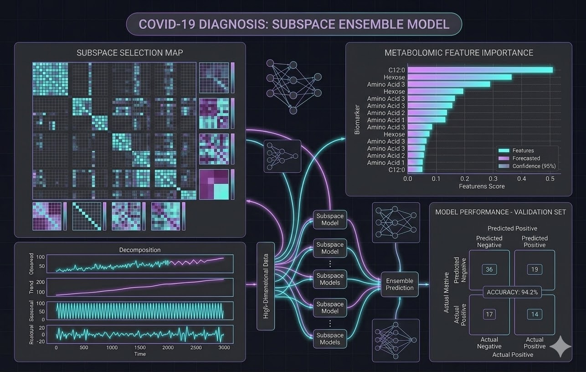
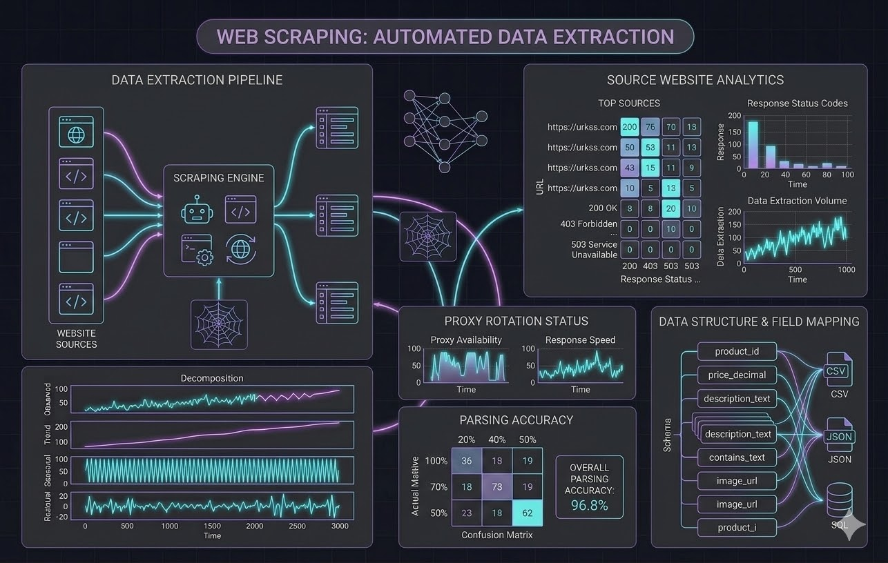
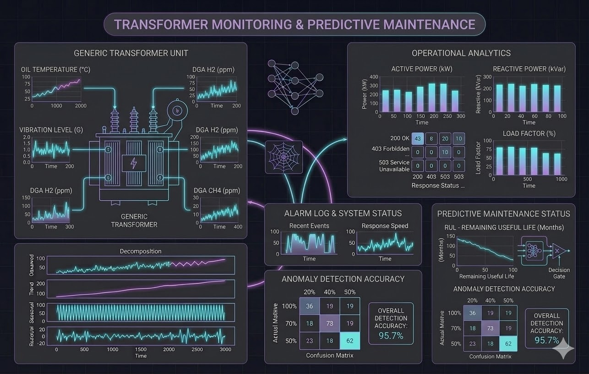

PORTFOLIO
Featured Projects




Predictive Models • Time Series Forecasting • Web Data Extraction • Interactive Dashboards
I help companies turn data into actionable insights through machine learning, predictive modeling, web scraping and data visualization systems.
ABOUT ME
hugo@data-science:~$ cat biografia.txt
Mi camino hacia la ciencia de datos comenzó en la Física, donde desarrollé una base sólida en matemáticas y modelado analítico. Esta pasión por extraer respuestas de sistemas complejos me llevó a cursar una Maestría y, posteriormente, mi Doctorado.
En mi investigación doctoral, me especializo en la integración de datasets de metabolómica de alta dimensionalidad. Mi trabajo se enfoca en desarrollar y evaluar modelos de Machine Learning —específicamente métodos de ensamble en subespacios— para el diagnóstico preciso de COVID-19.
Combino este rigor científico con habilidades en programación (Python, automatización con web scraping y visualización) para construir soluciones que transformen datos crudos en conocimiento accionable.
hugo@data-science:~$ _
Bases matemáticas y modelado analítico de sistemas complejos.
Transición hacia el análisis de datos e investigación aplicada.
Investigación en Machine Learning y metabolómica aplicada al diagnóstico médico.
Próximo objetivo: Llevar la resolución de problemas complejos al sector industrial.
Fuera de la terminal de comandos de Zorin OS, disfruto armar y optimizar hardware de PC, siempre manteniendo un setup dual-boot bien afinado para transicionar del código a algunas sesiones de simulación de vuelo, Forza o CoD Zombies.
Además de entrenar algoritmos y evaluar métricas de rendimiento, este año me he propuesto un reto físico importante lejos de los monitores: acumular kilómetros para correr mi primer maratón.
TECH STACK
Desarrollo de scripts, pipelines de procesamiento y análisis exploratorio complejo.
Construcción, entrenamiento y evaluación de modelos predictivos y de ensamble.
Manipulación de arrays multidimensionales y creación de visualizaciones interactivas.
Automatización de tareas, control de versiones y extracción de datos web.
PORTFOLIO


